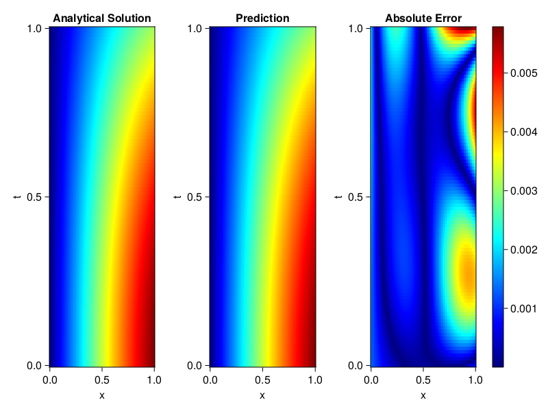
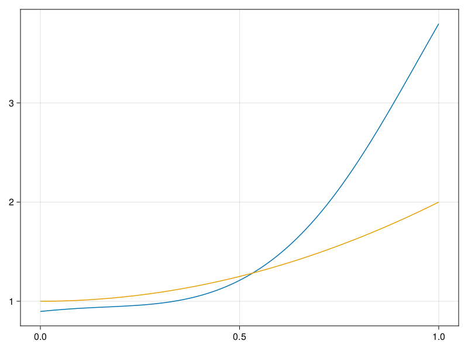

Inverse problem for the wave equation with unknown velocity field
We are going to sovle the wave equation.
using Sophon, ModelingToolkit, IntervalSets
using Optimization, OptimizationOptimJL
@parameters x, t
@variables u(..), c(..)
Dₜ = Differential(t)
Dₜ² = Differential(t)^2
Dₓ² = Differential(x)^2
s(x,t) = abs2(x) * sin(x) * cos(t)
eq = Dₜ²(u(x,t)) ~ c(x) * Dₓ²(u(x,t)) + s(x,t)
bcs = [u(x, 0) ~ sin(x),
Dₜ(u(x, 0)) ~ 0,
u(0, t) ~ 0,
u(1, t) ~ sin(1) * cos(t)]
domains = [t ∈ Interval(0.0, 1.0),
x ∈ Interval(0.0, 1.0)]
@named wave = PDESystem(eq, bcs, domains, [t,x], [u(x,t),c(x)])\[ \begin{align} \frac{\mathrm{d}}{\mathrm{d}t} \frac{\mathrm{d}}{\mathrm{d}t} u\left( x, t \right) =& c\left( x \right) \frac{\mathrm{d}}{\mathrm{d}x} \frac{\mathrm{d}}{\mathrm{d}x} u\left( x, t \right) + \cos\left( t \right) \left|x\right|^{2} \sin\left( x \right) \end{align} \]
Here the velocity field $c(x)$ is unknown, we will approximate it with a neural network.
pinn = PINN(u = FullyConnected((2,16,16,16,1), sin),
c = FullyConnected((1,16,16,1), tanh))
sampler = QuasiRandomSampler(500,100)
strategy = NonAdaptiveTraining(1, (10,10,1,1))NonAdaptiveTraining{Int64, NTuple{4, Int64}}(1, (10, 10, 1, 1))Next we generate some data of $u(x,t)$. Here we place two sensors at $x=0.1$ and $x=0.5$.
ū(x,t) = sin(x) * cos(t)
x_data = hcat(fill(0.1, 1, 50), fill(0.5, 1, 50))
t_data = repeat(range(0.0, 1.0, length = 50),2)'
input_data = [x_data; t_data]
u_data = ū.(x_data, t_data)1×100 Matrix{Float64}:
0.0998334 0.0998126 0.0997503 0.0996464 … 0.275281 0.267213 0.259035Finally we construct the inverse problem and solve it.
additional_loss(phi, θ) = sum(abs2, phi.u(input_data, θ.u) .- u_data)
prob = Sophon.discretize(wave, pinn, sampler, strategy; additional_loss=additional_loss)
@time res = Optimization.solve(prob, BFGS(), maxiters=1000)u: ComponentVector{Float64}(u = (layer_1 = (weight = [-0.34829775587837514 0.2927794768962544; -0.38735362324862727 0.847836550849419; … ; -0.5479338180944143 -0.48702843831671555; -0.4443043373219219 1.1003514363844604], bias = [-0.2844909438731242; -0.2783862548745517; … ; 0.037314420595342956; 0.09770787173743029;;]), layer_2 = (weight = [0.145616249831056 0.2801619841162341 … 0.034275787533755764 -0.48633967873249906; -0.04887221989016813 -0.34403087451413294 … 0.0808908513893782 0.0397967460661488; … ; 0.3221588745087264 0.514001362446456 … -0.30687721864200024 -0.30520903347421824; -0.44909074782348923 -0.3231408762029836 … 0.12966510459994823 0.35604138911806266], bias = [-0.06073929113590342; 0.35657143010229375; … ; 0.09404832936786195; 0.011982855656558372;;]), layer_3 = (weight = [-0.12654576861620598 -0.08894111046353947 … 0.06994953914119567 0.30178988995087475; -0.22144465059741772 -0.23447648096744445 … 0.37373857234339236 0.3204269101349916; … ; 0.11894995073078238 -0.005552850015168956 … 0.20554295753081953 -0.6004938412269188; -0.17389232977333655 0.6337481808480795 … -0.3530909398534777 -0.18132463627373194], bias = [-0.10655692548619136; 0.0004971661141515975; … ; -0.17811591377432393; -0.0035899696957394046;;]), layer_4 = (weight = [0.026774777762035136 0.2804911672397954 … 0.16717656735546674 -0.3549274219660868], bias = [-0.3194667286287737;;])), c = (layer_1 = (weight = [2.0705441607634634; 0.4961721939515859; … ; 0.976156132639761; -1.0270476451317627;;], bias = [-0.03448497108486409; -0.11931963804172765; … ; -0.9254986034689636; -0.0690342502183595;;]), layer_2 = (weight = [-0.5589322437283989 0.4288201082039338 … 0.6994622767227318 -0.4804857690128546; 0.3191055590536582 0.5918035398729842 … 0.22851888594892297 -0.10164216232995435; … ; 0.42959613538909996 0.30465532035884535 … 0.2188225618343743 -0.37930283612543064; 0.35942214511206333 0.5070747462685239 … 0.2573978948829026 -0.5347083266485558], bias = [-0.2070572139717576; 0.07574097423951427; … ; 0.2941708561421636; 0.3611170026327778;;]), layer_3 = (weight = [0.8822932978667506 0.791176026484317 … 0.12479328964556345 0.11835075328571], bias = [0.070772155266856;;])))Let's visualize the predictted solution and inferred velocity
using CairoMakie
ts = range(0, 1; length=100)
xs = range(0, 1; length=100)
u_pred = [pinn.phi.u([x, t], res.u.u)[1] for x in xs, t in ts]
c_pred = [pinn.phi.c([x], res.u.c)[1] for x in xs]
u_true = [ū(x, t) for x in xs, t in ts]
c_true = 1 .+ abs2.(xs) |> vec
axis = (xlabel="x", ylabel="t", title="Analytical Solution")
fig, ax1, hm1 = heatmap(xs, ts, u_true, axis=axis; colormap=:jet)
ax2, hm2= heatmap(fig[1, end+1], xs, ts, u_pred, axis= merge(axis, (;title = "Prediction")); colormap=:jet)
ax3, hm3 = heatmap(fig[1, end+1], xs, ts, abs.(u_true .- u_pred), axis= merge(axis, (;title = "Absolute Error")); colormap=:jet)
Colorbar(fig[:, end+1], hm3)
fig
fig, ax = lines(xs, c_pred)
lines!(ax, xs, c_true)
fig